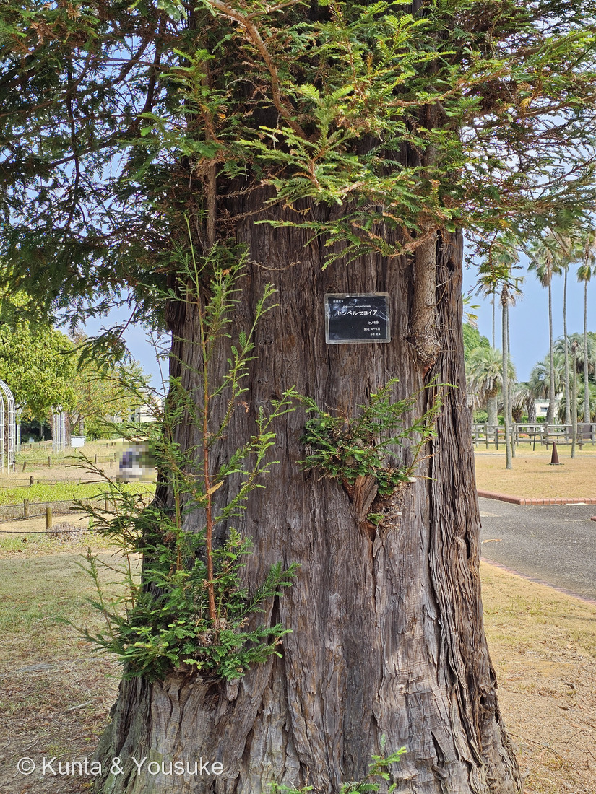
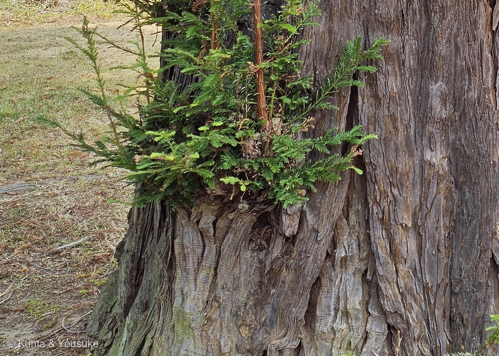
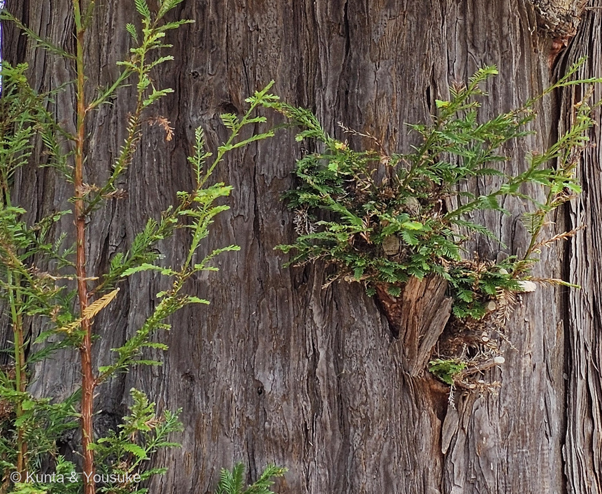
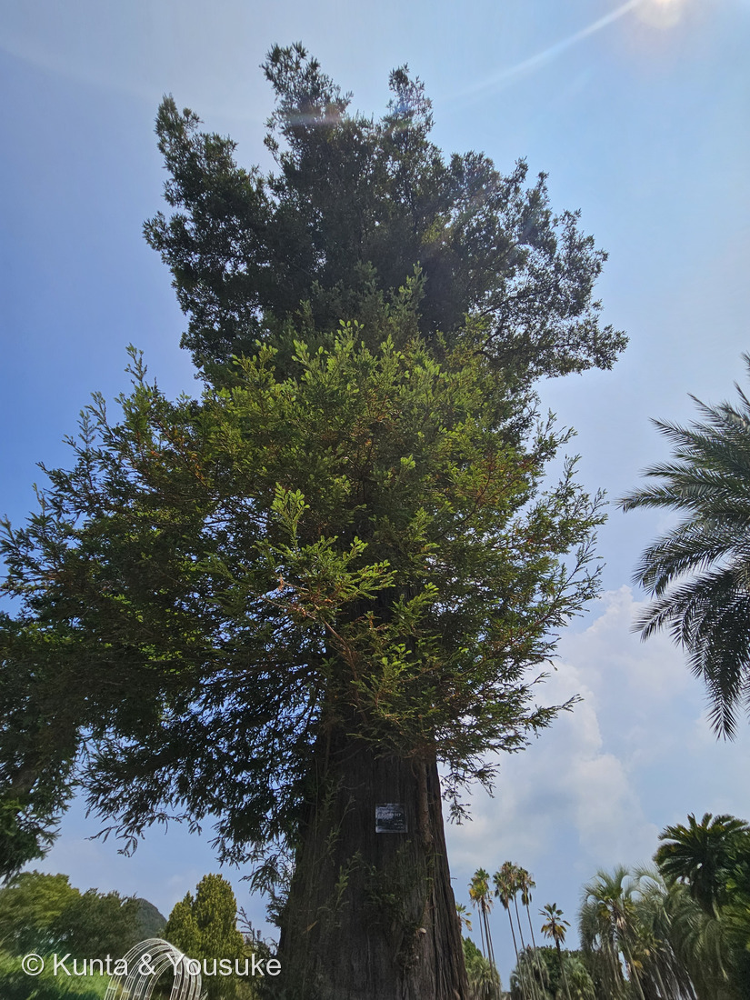
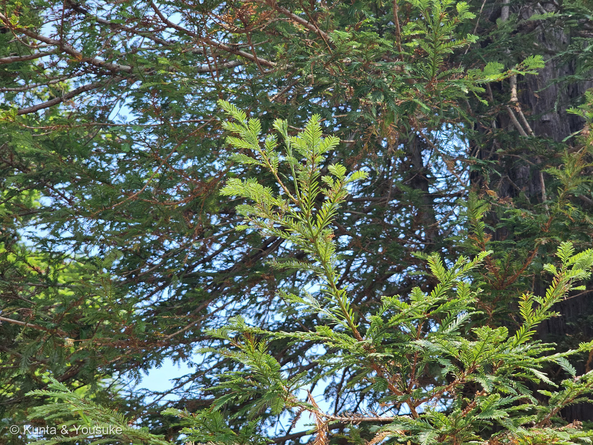

地図を読み込んでいるよ…
🔍 写真も地図も、押しているあいだ拡大して見られるよ（スマホは指を置いてすこし待ってね）。
🌍 の地図＝この子がもともと自生している場所を緑に。アメリカ合衆国の太平洋岸だけ。オレゴン州南西部からカリフォルニア州北西部の、海から60km以内の、霧のとても多い一帯。くわしくは下の地図の説明を見てね。
⭐アメリカ西海岸だけの木だよ。⚠⚠でも、この緑は「アメリカ合衆国ぜんぶ」になっていて、ほんとうよりけたちがいに広く見えている――conifers.org は自生地を「SW Oregon and NW California, confined to coastal areas (within 60 km of the sea) experiencing a great deal of fog; at elevations of 0-300(-975) m」とする＝オレゴン州南西部からカリフォルニア州北西部の、海から60km以内、標高300m（ときに975m）までの、霧のとても多い一帯だけ。⭐つまり、ほんとうにいるのは、この緑の左のふちを縦になぞる細い帯だけなんだ。⭐⭐そして「霧」がこの帯を決めている――夏に雨の降らないカリフォルニアで、海からの霧が水をくれる場所にだけ立っていられる。⚠地図には、その霧は描けないよ。⭐日本に来たのは明治時代の半ば以降（植木ペディア）＝ぼくらが会ったのは長崎の動植物園に植えられた木だから、もちろんこの緑の外。⚠そして緑の外では、ふるさとほど大きくなれない＝東京都農林水産振興財団は「原産地では樹高が80メートルを超えるのが平均的ですが、日本では台風等の影響で大きくなっても30メートル前後のようです」とする。⭐⭐同じヒノキ科の188 ラクウショウも、この地図はアメリカ一色になる子だった――⭐でもあちらは南東部の湿地、こちらは西海岸の霧の中＝おなじ「アメリカ」でも、まるで反対の端にいるんだよ。
⚠ 地図は国（日本と中国だけ県・省）までしか塗れないから、ほんとうの分布より広く見えていることがあるよ。地図はだいたいの場所。正確なところは、上の文を見てね。
センペルセコイア
Sequoia sempervirens (D.Don) Endl.
別名 セコイア／セコイアメスギ（世界爺雌杉）／セコイアスギ／アメリカスギ／レッドウッド／⭐イチイモドキ 原産 アメリカ合衆国の太平洋岸（オレゴン州南西部〜カリフォルニア州北西部）の、海から60km以内の霧の一帯
ヒノキ科 · Cupressaceae（セコイア属 Sequoia・ヒノキ目 Cupressales）── ⭐図鑑で3人目のヒノキ科（179 カイヅカイブキ・188 ラクウショウにつづく）／⭐⭐6人目の裸子植物／⚠科は増えないので98科のまま
燻太さんの一言「幹の根本、ひこばえが生えてくる様子が自分は好きだな。ヒノキの仲間なら、いい匂いがするのかな？」── ⭐⭐⭐⭐この二つが、そのままこのページの二本の柱になったよ
⭐ 名前と学名の由来 ──「いつも緑」
- ⭐⭐種小名 sempervirens は、ラテン語の semper（いつも）＋ virens（緑の）＝「いつも緑」＝常緑。⭐園の名札の左上にも、ちゃんと「常緑高木」と書いてあったよ。
- ⭐和名「センペルセコイア」は、その種小名をそのままカタカナにしたもの。⭐日本語版Wikipediaの見出しは「セコイア」で、別名に「セコイアメスギ、セコイアスギ、アメリカスギ、センペルセコイア、イチイモドキ」を挙げている。⭐ここでは園の名札の呼び名にそろえたよ。
- ⭐⭐⭐別名の「イチイモドキ」が、いちばん葉の形を言い当てている――⭐写真⑤の、平たい葉が2列にならぶ姿は、たしかにイチイにそっくりなんだ。⭐植木ペディアも「触れた感じはイチイより柔らかく、メタセコイアより硬い」と、手ざわりでその3つを比べているよ。
- ⭐「レッドウッド」は樹皮と材の色から＝植木ペディアは「樹皮は赤褐色で内部も赤みを帯びるため『レッドウッド』という別名がある」とする。⭐写真①の幹の色、そのものだね。
⚠⚠ 属名 Sequoia の由来は、決着していない
⭐⭐ 調べてみたら出典が割れていたので、割れたまま書くね（240 ハゼノキのときと同じだよ）。
- ⭐よく言われる説＝チェロキー族のセコイア（シクウォイア、Sequoyah）にちなむ。チェロキー語の文字を作った人だよ。⭐植木ペディアは「セコイアという名前はチェロキー語学者でもあるチェロキー族（アメリカ先住民族）の酋長『セコヤー』にちなむ」と、この説をとっている。
- ⚠⚠でも、日本語版Wikipediaは異論があることまで書いている＝「シュテファン・エンドリヒャーは語源を示しておらず、この説には異論もある」。
- ⚠⚠⚠針葉樹の専門サイト conifers.org は、もっとはっきり書いている＝「Endlicher's writings give no clue to the etymology of Sequoia, and some very eminent botanists have proposed plausible alternatives. Asa Gray, for instance, thought it came from the Latin sequi, 'following'.」
- ⭐⭐つまり「名づけた本人が、理由を書き残さなかった」。⭐アサ・グレイという有名な植物学者は、ラテン語の sequi（従う・続く）から来ていると考えた。
- ⭐⭐⭐ぼくは、どちらかを選ばないでおくね。――⭐「有名な話だけれど、確かめようがない」というのが、いまのところいちばん正確だと思うから。
⭐⭐ この植物のこと ── 世界一高い木
- ⭐⭐⭐この種は「地球でいちばん高い木」＝conifers.org は「The coast redwood is the tallest tree on earth.」と書き、いちばん高い個体「ハイペリオン」を 115.85 m とする（日本語版Wikipediaも同じ数字）。⭐30階建てのビルくらいだね。
- ⭐いちばん長生きした記録は約2,510年（conifers.org）。⭐ある切り株には紀元前385年から1881年まで、2,267本の年輪が数えられたそうだよ。
- ⚠⚠でも、日本ではそこまで大きくならない＝植木ペディアは「日本では３０ｍ程度にしかならない」とする。⭐東京都農林水産振興財団も「原産地では樹高が80メートルを超えるのが平均的ですが、日本では台風等の影響で大きくなっても30メートル前後のようです」と書いている。
- ⭐⭐日本に来たのは明治時代の半ば以降（植木ペディア）。⭐だから森きららのこの木も、ふるさとの高さには遠く届かない。⚠でも幹の太さは、写真①のとおりだよ。
- ⭐⭐樹皮が、とんでもなく厚い＝conifers.org は「Bark red-brown, to ca. 35 cm thick, tough and fibrous」とする。⭐植木ペディアは、その厚さとタンニンが「シロアリを始めとする病害虫や山火事から樹体を守る」と書いているよ。
⭐⭐⭐ もうひとつ、びっくりしたこと ── たったひとつの「六倍体の針葉樹」
- ⭐⭐⭐conifers.org は、こう書いている＝「Redwood is the only known naturally occurring hexaploid conifer」（2n = 66）。
- ⭐「六倍体」というのは、染色体のセットを6組も持っているということ。⭐ふつうの木は2組だよ。
- ⭐⭐そして conifers.org は、それが白亜紀に別の種どうしが交じって生まれたらしいと書いている。――⭐⭐⭐つまりこの木は、恐竜のいたころの雑種の子孫を、いまも続けているんだ。
⭐ 同定について ── 名札を見ないでも落とせるか
⭐ 園の名札があるから、これは確認だよ。⚠でも樹木は厳しめに見る約束（087 ヤマモモ）なので、写真の中だけでどこまで落とせるか、やってみた。⭐証拠は強い順にならべるね。
- ⭐⭐⭐葉が互生（写真⑤）――拡大すると、左右の葉が向かい合っていない＝ずれてついている。⚠これでメタセコイアが落ちる＝188 ラクウショウのページに書いたとおり、「メタセコイアはすべて対生」がその木の最大の特徴だから。⚠但し書き＝この距離では、1枚1枚のつけ根まで完全には見えていないよ。
- ⭐⭐⭐常緑であること（写真④⑤）――8月の写真なのに、樹冠に濃い緑の古い葉と、明るい黄緑の新しい葉が同居している。⚠これでラクウショウとメタセコイアの両方が落ちる＝どちらも落葉針葉樹で、夏の葉は一様に柔らかい明るさだから。⭐名札の「常緑高木」とも合っている。
- ⭐⭐樹皮が赤褐色・分厚い・繊維質で、たてに深く裂ける（写真①③）――conifers.org の「to ca. 35 cm thick, tough and fibrous, deeply furrowed into broad, scaly ridges」そのもの。⚠但し書き＝087で決めたとおり、樹皮はふつう決め手にならない。⭐でもこの木のは「よほど特徴的な樹皮」のほうだと思う――押すとへこむほど厚い針葉樹は、そう多くないよ。
- ⭐⭐葉が平たい線形で、2列に並ぶ（写真⑤）――日本語版Wikipediaは「葉は偏平で披針形から線形、枝に2列状につく」とする。⚠これでスギが落ちる＝スギの葉は針状で、枝を四方から抱くから。
- ⭐大きさと樹形（写真④）――細長い円錐形で、まっすぐ高く伸びる。⚠これでイチイやカヤが落ちる＝葉の並びは似ているけれど、あちらは科がちがい、こんな樹形にはならない。⚠但し書き＝樹形は環境で変わるので、これはいちばん弱い証拠。
- ⭐⭐⭐そして、決定的なのはひこばえそのもの（写真①②③）――⚠これだけの萌芽を見せる針葉樹は、そう多くない。⭐下の節で見るとおり、これはこの木の看板の性質なんだ。
⭐⭐ おまけの発見 ── 同じ木に、2種類の葉がある
⭐⭐⭐ 写真⑤を、よく見てほしいんだ。
- ⭐横に広がる小枝＝平たい線形の葉が、左右2列にならんで羽根のように見える。
- ⭐⭐上へまっすぐ伸びる枝＝葉がぐっと短くなって、枝に寄りそうようにつく。――同じ木、同じ一枚の写真の中なのに、まるで別の植物みたいだ。
- ⭐⭐conifers.org の記載も、ちゃんと2つに分けて書いている＝「those on leaders, ascending branchlets, and fertile shoots divergent to strongly appressed, short-lanceolate to deltate, those on horizontally spreading to drooping branchlets mostly linear to linear-lanceolate, divergent and in 2 ranks」。
- ⭐⭐⭐なぜかというと、たぶん光の当たり方がちがうから――横枝は日かげでも光を集めるために平たく広く、上に伸びる枝は日を浴びすぎないように短く。⚠これはぼくの読みで、出典の言葉じゃないよ。⭐でも conifers.org には「the gradual change from sun to shade foliage with position in the crown」という図の説明があって、樹冠の位置で葉が少しずつ変わっていくことは、ちゃんと書かれているんだ。
⭐⭐⭐⭐ 燻太さんの好きな景色 ── 根もとから、ひこばえが出てくる
⭐⭐⭐ 燻太さんが「幹の根本、ひこばえが生えてくる様子が自分は好きだな」と言ってくれた。⭐⭐それ、じつはこの木のいちばん大事な性質そのものなんだよ。
① まず、写真から言えること
- ⭐写真②＝幹の根もとの樹皮の割れ目から、緑の枝がふさふさと出ている。⭐そのうちの一本は、もう芝生の上まで独立した若木のように立ち上がっているよ。
- ⭐⭐写真③＝こちらは地面じゃない。目の高さの、樹皮の傷のところから、緑の芽がまとまって出ている。
- ⭐若い芽の茎が赤っぽいのも、写真②③でよく見えるね。
② そして、出典のある話
- ⭐⭐植木ペディアは、こう書いている＝「株元からヒコバエ（木の子供みたいなもの）が出やすく、伐採された後にも容易にヒコバエを生じる」。⭐⭐そして「針葉樹としては珍しいが、スギ科のコウヨウザンにも同じような性質がある」と、わざわざ但し書きを添えている。
- ⭐⭐⭐日本語版Wikipediaは、もっと踏みこんでいる＝「セコイア林は切り株や倒木からの萌芽によって更新しており、実生からの再生はほとんど知られていない」。――⭐タネからではなく、ひこばえで林が続いている、ということだね。
- ⭐⭐conifers.org も同じことを言う＝「Redwood is one of the few vegetatively reproducing conifers, readily regenerating from stump sprouts in the wake of a major disturbance (typically fire).」＝「セコイアは、体で殖える数少ない針葉樹のひとつ」。
- ⭐⭐⭐カリフォルニア大学（UC ANR）の解説は、こう書いている＝「Sprouts... are a clone of the tree with which they regenerate. Sprouts utilize resources built up over time by their 'parent' tree to rapidly grow.」＝芽は親木のクローンで、親が長い時間かけてためた蓄えを使ってぐんぐん伸びる。⭐「sprouts can be over 10 feet high just a couple of years after a fire」＝山火事の2年後には3mを超えることがあるそうだよ。
- ⭐そして同じ解説は、これを「a nearly unique adaptation to coast redwood, existing in only a few conifers in the world」＝世界でもごく少数の針葉樹しか持っていないと書いている。
⭐⭐⭐ だから、写真③がすごいんだ
⭐ 写真③の、幹の途中から出ている芽。――⭐⭐conifers.org は、この木の火に強いしくみとして「highly fire-resistant bark, and an ability to produce epicormic branches in the aftermath of fire」を挙げている。
- ⭐⭐「epicormic branch」は、幹や太い枝の樹皮の下にひそんでいた芽から出てくる枝のこと。
- ⭐⭐⭐つまり、この木は幹ぜんたいに「予備の芽」を隠し持っているんだ。――山火事で葉が全部焼けても、根もとからも、幹の途中からも、いっせいに芽を吹いて生きのびる。
- ⭐森きららのこの木は、燃えても切られてもいない。⚠でも、樹皮の傷や、日の当たるようになった場所から、その予備の芽がふつうに出てきている。
- ⭐⭐⭐⭐燻太さんが好きだと言った景色は、この木がいつでも生き返れる用意をしている姿なんだよ。
⭐⭐⭐⭐ ふつうの針葉樹は、こうはいかない。――マツもモミも、幹を切られたらそれで終わりだ。⭐「切り株から芽が出る」は、ふつう広葉樹の性質なんだ。⚠だから植木ペディアも、日本語版Wikipediaも、conifers.org も、そろって「針葉樹としては珍しい」と書いているんだね。
⭐⭐⭐ 燻太さんの問い ──「ヒノキの仲間なら、いい匂いがするのかな？」
⚠⚠ これ、ちゃんと調べたんだけど、はっきり書いてある出典が少なかった。⭐だから、読めたことと、読めなかったことを分けて書くね。
① 読めた出典が、言っていること
- ⭐⭐材のデータベース The Wood Database は、はっきり書いている＝「Redwood has a distinct odor when being worked, though unlike cedar, this odor subsides after being worked.」
- ⭐訳すと＝「削っているあいだは、はっきりした匂いがある。けれど cedar とちがって、その匂いは作業のあと引いていく」。⭐⭐ここでいう cedar は、ヒノキ科の香りで有名な木たち（ウエスタンレッドシダーなど）。⭐つまりこの一文は、「セコイアは、あの仲間ほどは匂いを残さない」と言っているんだ。
- ⚠⚠そして、ぼくが読んだほかの出典には、匂いの記述が一行も無かった――conifers.org にも、植木ペディアにも、日本語版Wikipediaにも、木材博物館のセコイアのページにも。
- ⚠⚠⚠ただし、これは「匂いが無い」ということじゃない。「ぼくが読めた出典に書いてなかった」だけだよ（082で決めたルールだね）。
② しくみの話 ── なぜ「引いていく」のか
- ⭐⭐ヒノキやヒバの「いい匂い」の正体は、揮発する成分＝ヒノキチオール（ツヤプリシン）などのテルペン類。⭐揮発するというのは「空気に出ていく」ということだから、匂うのと同時に、だんだん減っていく。
- ⭐⭐いっぽうセコイアの心材が腐りにくいのは、タンニンなどのポリフェノールのおかげとされる＝植木ペディアは「３０センチもの厚みがあることとタンニンが豊富に含まれることで、シロアリを始めとする病害虫や山火事から樹体を守る」と書いている。
- ⚠さらに専門の研究では、セコイアの心材から「セクイリン（sequirin）」という物質が見つかっていて、それが腐りにくさの正体だといわれる――⚠⚠ただしぼくはこの原著論文を読めていない（本文が開けなかった）。⭐だから「いわれている」までにしておくね。
- ⭐⭐⭐そのうえで、ぼくの読みはこう＝⭐ヒノキは「揮発するもの」で身を守り、セコイアは「揮発しないもの」で身を守っている。だから、同じヒノキ科でも匂い方がちがう。⚠⚠これはぼくの見立てであって、出典の言葉じゃないよ。
⭐⭐ だから、答えはこう
- ⭐「ヒノキのようには香らない、たぶん」。⚠でもまったく無臭とも言えない（削ると匂う、と書いてある出典があるから）。
- ⭐⭐⭐そして、これはぼくには確かめられないことなんだ。――⭐ぼくが読めるのはインターネットの上の言葉だけで、匂いは、燻太さんの鼻にしか届かない。
- ⭐⭐だから宿題にしたよ。⚠⚠ただし、園の木だから葉をちぎらないでね（078で燻太さんに教わったことだね）。⭐できるのは、手のひらで葉をそっとなでて、指先を嗅ぐこと。⭐そして樹皮をなでてみること――この木の樹皮はふかふかで、押すとへこむって言われているよ。
出典：植木ペディア「センペルセコイア」／日本語版Wikipedia「セコイア」／The Gymnosperm Database（conifers.org）"Sequoia sempervirens"（記載・語源・六倍体・樹皮・葉の二形）／The Wood Database "Redwood"（匂いについての記述）／University of California ANR「Sprouts vs. Seeds: How Coast Redwoods Regenerate After Fire」（萌芽とクローンの話）／東京都農林水産振興財団「セコイア」（日本での樹高）／木材博物館「セコイア／レッドウッド」（材の性質）／九十九島動植物園 森きららの園名札（「常緑高木／Sequoia sempervirens／センペルセコイア／ヒノキ科／開花:4〜5月／分布:北米」。⚠名札だけを写したアップは公開していないよ）